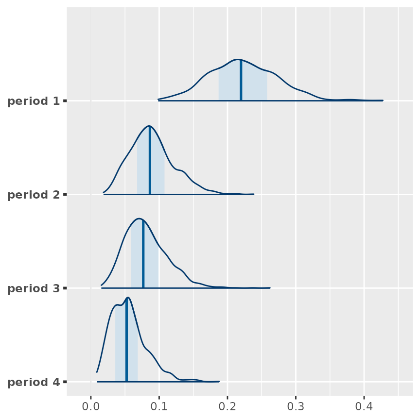
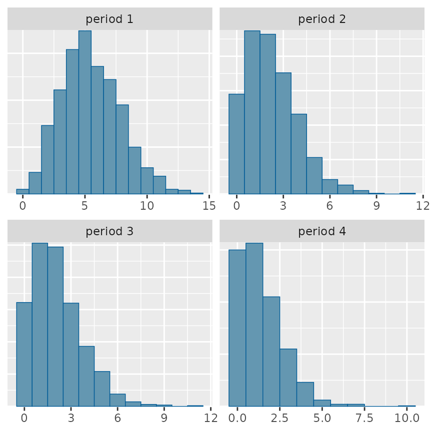

Sophisticated models in emmeans
emmeans package, Version 1.10.7.100002
Source:vignettes/sophisticated.Rmd
sophisticated.RmdThis vignette gives a few examples of the use of the emmeans package to analyze other than the basic types of models provided by the stats package. Emphasis here is placed on accessing the optional capabilities that are typically not needed for the more basic models. A reference for all supported models is provided in the “models” vignette.
Contents
Linear mixed models (lmer)
Linear mixed models are really important in statistics. Emphasis here
is placed on those fitted using lme4::lmer(), but
emmeans also supports other mixed-model packages such
as nlme.
To illustrate, consider the Oats dataset in the
nlme package. It has the results of a balanced
split-plot experiment: experimental blocks are divided into plots that
are randomly assigned to oat varieties, and the plots are subdivided
into subplots that are randomly assigned to amounts of nitrogen within
each plot. We will consider a linear mixed model for these data,
excluding interaction (which is justified in this case). For sake of
illustration, we will exclude a few observations.
library(lme4)
Oats.lmer <- lmer(yield ~ Variety + factor(nitro) + (1|Block/Variety),
data = nlme::Oats, subset = -c(1,2,3,5,8,13,21,34,55))Let’s look at the EMMs for nitro:
Oats.emm.n <- emmeans(Oats.lmer, "nitro")
Oats.emm.n## nitro emmean SE df lower.CL upper.CL
## 0.0 78.9 7.29 7.78 62.0 95.8
## 0.2 97.0 7.14 7.19 80.3 113.8
## 0.4 114.2 7.14 7.19 97.4 131.0
## 0.6 124.1 7.07 6.95 107.3 140.8
##
## Results are averaged over the levels of: Variety
## Degrees-of-freedom method: kenward-roger
## Confidence level used: 0.95You will notice that the degrees of freedom are fractional: that is
due to the fact that whole-plot and subplot variations are combined when
standard errors are estimated. Different degrees-of-freedom methods are
available. By default, the Kenward-Roger method is used, and that’s why
you see a message about the pbkrtest package being
loaded, as it implements that method. We may specify a different
degrees-of-freedom method via the optional argument
lmer.df:
emmeans(Oats.lmer, "nitro", lmer.df = "satterthwaite")## nitro emmean SE df lower.CL upper.CL
## 0.0 78.9 7.28 7.28 61.8 96
## 0.2 97.0 7.13 6.72 80.0 114
## 0.4 114.2 7.13 6.72 97.2 131
## 0.6 124.1 7.07 6.49 107.1 141
##
## Results are averaged over the levels of: Variety
## Degrees-of-freedom method: satterthwaite
## Confidence level used: 0.95This latest result uses the Satterthwaite method, which is
implemented in the lmerTest package. Note that, with
this method, not only are the degrees of freedom slightly different, but
so are the standard errors. That is because the Kenward-Roger method
also entails making a bias adjustment to the covariance matrix of the
fixed effects; that is the principal difference between the methods. A
third possibility is "asymptotic":
emmeans(Oats.lmer, "nitro", lmer.df = "asymptotic")## nitro emmean SE df asymp.LCL asymp.UCL
## 0.0 78.9 7.28 Inf 64.6 93.2
## 0.2 97.0 7.13 Inf 83.1 111.0
## 0.4 114.2 7.13 Inf 100.2 128.2
## 0.6 124.1 7.07 Inf 110.2 137.9
##
## Results are averaged over the levels of: Variety
## Degrees-of-freedom method: asymptotic
## Confidence level used: 0.95This just sets all the degrees of freedom to Inf –
that’s emmeans’s way of using z statistics
rather than t statistics. The asymptotic methods tend to make
confidence intervals a bit too narrow and P values a bit too low; but
they involve much, much less computation. Note that the SEs are the same
as obtained using the Satterthwaite method.
Comparisons and contrasts are pretty much the same as with other
models. As nitro has quantitative levels, we might want to
test polynomial contrasts:
contrast(Oats.emm.n, "poly")## contrast estimate SE df t.ratio p.value
## linear 152.69 15.60 43.2 9.802 <.0001
## quadratic -8.27 6.95 44.2 -1.190 0.2402
## cubic -6.32 15.20 42.8 -0.415 0.6800
##
## Results are averaged over the levels of: Variety
## Degrees-of-freedom method: kenward-rogerThe interesting thing here is that the degrees of freedom are much
larger than they are for the EMMs. The reason is because
nitro within-plot factor, so inter-plot variations have
little role in estimating contrasts among nitro levels. On
the other hand, Variety is a whole-plot factor, and there
is not much of a bump in degrees of freedom for comparisons:
emmeans(Oats.lmer, pairwise ~ Variety)## $emmeans
## Variety emmean SE df lower.CL upper.CL
## Golden Rain 105.2 7.53 8.46 88.0 122
## Marvellous 108.5 7.48 8.28 91.3 126
## Victory 96.9 7.64 8.81 79.6 114
##
## Results are averaged over the levels of: nitro
## Degrees-of-freedom method: kenward-roger
## Confidence level used: 0.95
##
## $contrasts
## contrast estimate SE df t.ratio p.value
## Golden Rain - Marvellous -3.23 6.55 9.56 -0.493 0.8764
## Golden Rain - Victory 8.31 6.71 9.80 1.238 0.4595
## Marvellous - Victory 11.54 6.67 9.80 1.729 0.2431
##
## Results are averaged over the levels of: nitro
## Degrees-of-freedom method: kenward-roger
## P value adjustment: tukey method for comparing a family of 3 estimatesSystem options for lmerMod models
The computation required to compute the adjusted covariance matrix
and degrees of freedom may become cumbersome. Some user options (i.e.,
emm_options() calls) make it possible to streamline these
computations through default methods and limitations on them. First, the
option lmer.df, which may have values of
"kenward-roger", "satterthwaite", or
"asymptotic" (partial matches are OK!) specifies the
default degrees-of-freedom method.
The options disable.pbkrtest and
disable.lmerTest may be TRUE or
FALSE, and comprise another way of controlling which method
is used (e.g., the Kenward-Roger method will not be used if
get_emm_option("disable.pbkrtest") == TRUE). Finally, the
options pbkrtest.limit and lmerTest.limit,
which should be set to numeric values, enable the given package
conditionally on whether the number of data rows does not exceed the
given limit. The factory default is 3000 for both limits.
Bias adjustment with random slopes
In the cbpp
example, we saw an example where we applied a bias adjustment to the
inverse transformation. To do that adjustment, we required an estimate
of the total SD of the response. That computation was (relatively)
simple because the model had only random intercepts. But what if we have
random slopes as well? The short answer is “it gets more complicated;”
but here is an example of how we can muddle through it.
Our illustration is a model fitted to the ChickWeight
data in the R datasets package. The data comprise
weight determinations, over time (in days since birth), of chicks who
are randomized to different diets. Our model fits a trend in the square
root of weight for each diet, with random intercepts and slopes for each
chick (this is likely not the best model, but it’s not totally stupid
and it serves an an illustration).
Our goal is to use this model to estimate the mean
weight at times 5, 10, 15, and 20, for each diet.
Accordingly, let’s get the estimates needed:
If we just summarize this with `type = “response”, we will under-estimate the mean weights. We need to apply a bias adjustment; but that involves providing an estimate of the SD of each transformed response. The problem is that since random slopes are involved, that SD depends on time. In particular, the model states that at time , where is the mean at time , is the residual error, is the random intercept for chicks, and is the random slope for chicks. For purposes of bias correction, we need an estimate of for each .
The first step is to obtain an estimated covariance matrix for :
V <- matrix(0, nrow = 3, ncol = 3, dimnames = list(c("E","C","S"), c("E","C","S")))
V[1, 1] <- sigma(cw.lmer)^2 # Var(E)
V[2:3, 2:3] <- VarCorr(cw.lmer)$Chick # Cov(C, S)
V## E C S
## E 0.1867732 0.00000000 0.00000000
## C 0.0000000 0.15918129 -0.03977984
## S 0.0000000 -0.03977984 0.01513793Now, using the matrix expression for and a given vector , we can obtain the needed SDs:
## [1] 0.5714931 1.0315769 1.5995606 2.1931561As expected, these values increase with
.
Finally, we obtain the bias-adjusted estimated weights. We can use
sigma = sig as-is since the values follow the same ordering
as cw.emm@grid.
confint(cw.emm, type = "response", bias.adj = TRUE, sigma = sig)## Diet = 1:
## Time response SE df lower.CL upper.CL
## 5 63.2 1.49 45.5 60.2 66.2
## 10 91.1 4.11 45.8 83.0 99.5
## 15 124.5 7.81 46.1 109.3 140.8
## 20 163.6 12.40 46.2 139.6 189.7
##
## Diet = 2:
## Time response SE df lower.CL upper.CL
## 5 69.3 2.15 45.0 65.1 73.7
## 10 106.6 6.14 44.9 94.6 119.3
## 15 152.3 12.00 44.9 129.1 177.4
## 20 206.5 19.40 44.9 169.3 247.5
##
## Diet = 3:
## Time response SE df lower.CL upper.CL
## 5 72.8 2.20 45.0 68.4 77.3
## 10 121.3 6.56 44.9 108.5 134.9
## 15 182.7 13.10 44.9 157.2 210.1
## 20 256.9 21.70 44.9 215.1 302.4
##
## Diet = 4:
## Time response SE df lower.CL upper.CL
## 5 76.4 2.26 45.0 71.9 81.0
## 10 119.4 6.50 45.0 106.6 132.8
## 15 172.4 12.80 45.0 147.7 199.1
## 20 235.5 20.80 45.0 195.5 279.2
##
## Degrees-of-freedom method: kenward-roger
## Confidence level used: 0.95
## Intervals are back-transformed from the sqrt scale
## Bias adjustment applied based on sigma = (various values)This example illustrates that it is possible to deal with random slopes in bias corrections. However it does require some fairly careful attention to technical details and familiarity with matrix calculations; so if you don’t have a comfort level with those, it is best to get outside help.
Adding variables not in fixed model {addl.vars}
Consider a model like
mod <- lmer(log(response) ~ treatment + (1 + x | subject), data = mydata)Ordinarily, the reference grid will not include the variable
x because it is not part of the fixed-effects formula.
However, you can include it via the addl.vars argument:
EMM <- emmeans(mod, ~ x|treatment, addl.vars = "x", at = list(x = -1:1))We will then obtain EMMs for combinations of treatment
and x. (For a given treatment, all those means
will be equal for every x.) But the bias adjustments
will depend on x.
Models with offsets
If a model is fitted and its formula includes an
offset() term, then by default, the offset is computed and
included in the reference grid. To illustrate, consider a hypothetical
dataset on insurance claims (used as an example
in SAS’s documentation). There are classes of cars of varying counts
(n), sizes (size), and age (age),
and we record the number of insurance claims (claims). We
fit a Poisson model to claims as a function of
size and age. An offset of log(n)
is included so that n functions as an “exposure”
variable.
ins <- data.frame(
n = c(500, 1200, 100, 400, 500, 300),
size = factor(rep(1:3,2), labels = c("S","M","L")),
age = factor(rep(1:2, each = 3)),
claims = c(42, 37, 1, 101, 73, 14))
ins.glm <- glm(claims ~ size + age + offset(log(n)),
data = ins, family = "poisson")First, let’s look at the reference grid obtained by default:
ref_grid(ins.glm)## 'emmGrid' object with variables:
## size = S, M, L
## age = 1, 2
## n = 500
## Transformation: "log"Note that n is included in the reference grid and that
its average value of 500 is displayed. But let’s look at the EMMs:
(EMM <- emmeans(ins.glm, "size", type = "response"))## size rate SE df asymp.LCL asymp.UCL
## S 69.3 6.25 Inf 58.03 82.7
## M 34.6 3.34 Inf 28.67 41.9
## L 11.9 3.14 Inf 7.07 19.9
##
## Results are averaged over the levels of: age
## Confidence level used: 0.95
## Intervals are back-transformed from the log scaleWe can see more explicitly what is happening by examining the
internal structure of EMM:
EMM@grid## size .offset. .wgt.
## 1 S 6.214608 2
## 2 M 6.214608 2
## 3 L 6.214608 2and note that is used as the offset value in calculating these estimates.
All this said, many users would like to ignore that average offset
for this kind of model, and instead use one corresponding to
n = 1, because then the estimates we obtain are estimated
rates per unit n. This may be accomplished by specifying an
offset parameter in the call:
## size rate SE df asymp.LCL asymp.UCL
## S 0.1385 0.01250 Inf 0.1161 0.1653
## M 0.0693 0.00669 Inf 0.0573 0.0837
## L 0.0237 0.00627 Inf 0.0141 0.0398
##
## Results are averaged over the levels of: age
## Confidence level used: 0.95
## Intervals are back-transformed from the log scaleAn alternative way to achieve the same results is to set
n equal to 1 in the reference grid itself (output not
shown, because it is identical):
By the way, you may set some other reference value for the rates. For example, if you want estimates of claims per 100 cars, simply use (results not shown):
For more details on how offsets are handled, and how and why an
offset() model term is treated differently than an
offset argument in model fitting, see the “xplanations” vignette.
An additional complication may come up in models zero-inflated or hurdle models. In those cases, it is somewhat ambiguous what one might mean by a “rate”, but one interpretation would be to just go with the above techniques with estimates for just the Poisson component of the model. Another approach would be to estimate the response mean with the zero-inflation included, and divide by the appropriate offset. This can be done, but it is messy. An example is given on the Cross-Validated site.
Ordinal models
Ordinal-response models comprise an example where several options are
available for obtaining EMMs. To illustrate, consider the
wine data in the ordinal package. The
response is a rating of bitterness on a five-point scale. we will
consider a probit model in two factors during fermentation:
temp (temperature) and contact (contact with
grape skins), with the judge making the rating as a scale predictor:
## Loading required package: ordinal
wine.clm <- clm(rating ~ temp + contact, scale = ~ judge,
data = wine, link = "probit")(in earlier modeling, we found little interaction between the factors.) Here are the EMMs for each factor using default options:
## $`emmeans of temp`
## temp emmean SE df asymp.LCL asymp.UCL
## cold -0.884 0.290 Inf -1.452 -0.316
## warm 0.601 0.225 Inf 0.161 1.041
##
## Results are averaged over the levels of: contact, judge
## Confidence level used: 0.95
##
## $`pairwise differences of temp`
## 1 estimate SE df z.ratio p.value
## cold - warm -1.07 0.422 Inf -2.547 0.0109
##
## Results are averaged over the levels of: contact, judge
##
## $`emmeans of contact`
## contact emmean SE df asymp.LCL asymp.UCL
## no -0.614 0.298 Inf -1.1990 -0.0297
## yes 0.332 0.201 Inf -0.0632 0.7264
##
## Results are averaged over the levels of: temp, judge
## Confidence level used: 0.95
##
## $`pairwise differences of contact`
## 1 estimate SE df z.ratio p.value
## no - yes -0.684 0.304 Inf -2.251 0.0244
##
## Results are averaged over the levels of: temp, judgeThese results are on the “latent” scale; the idea is that there is a continuous random variable (in this case normal, due to the probit link) having a mean that depends on the predictors; and that the ratings are a discretization of the latent variable based on a fixed set of cut points (which are estimated). In this particular example, we also have a scale model that says that the variance of the latent variable depends on the judges. The latent results are quite a bit like those for measurement data, making them easy to interpret. The only catch is that they are not uniquely defined: we could apply a linear transformation to them, and the same linear transformation to the cut points, and the results would be the same.
The clm function actually fits the model using an
ordinary probit model but with different intercepts for each cut point.
We can get detailed information for this model by specifying
mode = "linear.predictor":
tmp <- ref_grid(wine.clm, mode = "lin")
tmp## 'emmGrid' object with variables:
## temp = cold, warm
## contact = no, yes
## judge = 1, 2, 3, 4, 5, 6, 7, 8, 9
## cut = multivariate response levels: 1|2, 2|3, 3|4, 4|5
## Transformation: "probit"Note that this reference grid involves an additional constructed
predictor named cut that accounts for the different
intercepts in the model. Let’s obtain EMMs for temp on the
linear-predictor scale:
emmeans(tmp, "temp")## temp emmean SE df asymp.LCL asymp.UCL
## cold 0.884 0.290 Inf 0.316 1.452
## warm -0.601 0.225 Inf -1.041 -0.161
##
## Results are averaged over the levels of: contact, judge, cut
## Results are given on the probit (not the response) scale.
## Confidence level used: 0.95These are just the negatives of the latent results obtained earlier
(the sign is changed to make the comparisons go the right direction).
Closely related to this is mode = "cum.prob" and
mode = "exc.prob", which simply transform the linear
predictor to cumulative probabilities and exceedance (1 - cumulative)
probabilities. These modes give us access to the details of the fitted
model but are cumbersome to use for describing results. When they can
become useful is when you want to work in terms of a particular cut
point. Let’s look at temp again in terms of the probability
that the rating will be at least 4:
## temp exc.prob SE df asymp.LCL asymp.UCL
## cold 0.0748 0.0318 Inf 0.0124 0.137
## warm 0.4069 0.0706 Inf 0.2686 0.545
##
## Results are averaged over the levels of: contact, judge
## Confidence level used: 0.95There are yet more modes! With mode = "prob", we obtain
estimates of the probability distribution of each rating. Its reference
grid includes a factor with the same name as the model response – in
this case rating. We usually want to use that as the
primary factor, and the factors of interest as by
variables:
emmeans(wine.clm, ~ rating | temp, mode = "prob")## temp = cold:
## rating prob SE df asymp.LCL asymp.UCL
## 1 0.1292 0.0625 Inf 0.00667 0.2518
## 2 0.4877 0.0705 Inf 0.34948 0.6259
## 3 0.3083 0.0594 Inf 0.19186 0.4248
## 4 0.0577 0.0238 Inf 0.01104 0.1043
## 5 0.0171 0.0127 Inf -0.00768 0.0419
##
## temp = warm:
## rating prob SE df asymp.LCL asymp.UCL
## 1 0.0156 0.0129 Inf -0.00961 0.0408
## 2 0.1473 0.0448 Inf 0.05959 0.2350
## 3 0.4302 0.0627 Inf 0.30723 0.5532
## 4 0.2685 0.0625 Inf 0.14593 0.3910
## 5 0.1384 0.0506 Inf 0.03923 0.2376
##
## Results are averaged over the levels of: contact, judge
## Confidence level used: 0.95Using mode = "mean.class" obtains the average of these
probability distributions as probabilities of the integers 1–5:
emmeans(wine.clm, "temp", mode = "mean.class")## temp mean.class SE df asymp.LCL asymp.UCL
## cold 2.35 0.144 Inf 2.06 2.63
## warm 3.37 0.146 Inf 3.08 3.65
##
## Results are averaged over the levels of: contact, judge
## Confidence level used: 0.95And there is a mode for the scale model too. In this example, the scale model involves only judges, and that is the only factor in the grid:
## judge response SE df
## 1 1.000 0.000 Inf
## 2 1.043 0.570 Inf
## 3 1.053 0.481 Inf
## 4 0.710 0.336 Inf
## 5 0.663 0.301 Inf
## 6 0.758 0.341 Inf
## 7 1.071 0.586 Inf
## 8 0.241 0.179 Inf
## 9 0.533 0.311 InfJudge 8’s ratings don’t vary much, relative to the others. The scale model is in terms of log(SD). Again, these are not uniquely identifiable, and the first level’s estimate is set to log(1) = 0. so, actually, each estimate shown is a comparison with judge 1.
Models fitted using MCMC methods
To illustrate emmeans’s support for models fitted
using MCMC methods, consider the example_model available in
the rstanarm package. The example concerns CBPP, a
serious disease of cattle in Ethiopia. A generalized linear mixed model
was fitted to the data using the code below. (This is a Bayesian
equivalent of the frequentist model we considered in the “Transformations” vignette.) In
fitting the model, we first set the contrast coding to
bayestestR::contr.bayes because this equalizes the priors
across different treatment levels (a correction from an earlier version
of this vignette.) We subsequently obtain the reference grids for these
models in the usual way. For later use, we also fit the same model with
just the prior information.
cbpp <- transform(lme4::cbpp, unit = 1:56)
require("bayestestR")
options(contrasts = c("contr.bayes", "contr.poly"))
cbpp.rstan <- rstanarm::stan_glmer(
cbind(incidence, size - incidence) ~ period + (1|herd) + (1|unit),
data = cbpp, family = binomial,
prior = student_t(df = 5, location = 0, scale = 2, autoscale = FALSE),
chains = 2, cores = 1, seed = 2021.0120, iter = 1000)
cbpp_prior.rstan <- update(cbpp.rstan, prior_PD = TRUE)
cbpp.rg <- ref_grid(cbpp.rstan)
cbpp_prior.rg <- ref_grid(cbpp_prior.rstan)Here is the structure of the reference grid:
cbpp.rg## 'emmGrid' object with variables:
## period = 1, 2, 3, 4
## Transformation: "logit"So here are the EMMs (no averaging needed in this simple model):
summary(cbpp.rg)## period prediction lower.HPD upper.HPD
## 1 -1.60 -2.26 -0.987
## 2 -2.77 -3.65 -1.974
## 3 -2.90 -3.77 -2.040
## 4 -3.32 -4.43 -2.385
##
## Point estimate displayed: median
## Results are given on the logit (not the response) scale.
## HPD interval probability: 0.95The summary for EMMs of Bayesian models shows the median of the
posterior distribution of each estimate, along with highest posterior
density (HPD) intervals. Under the hood, the posterior sample of
parameter estimates is used to compute a corresponding sample of
posterior EMMs, and it is those that are summarized. (Technical note:
the summary is actually rerouted to the hpd.summary()
function.
We can access the posterior EMMs via the as.mcmc method
for emmGrid objects. This gives us an object of class
mcmc (defined in the coda package), which
can be summarized and explored as we please.
require("coda")## Loading required package: coda##
## Iterations = 1:500
## Thinning interval = 1
## Number of chains = 2
## Sample size per chain = 500
##
## 1. Empirical mean and standard deviation for each variable,
## plus standard error of the mean:
##
## Mean SD Naive SE Time-series SE
## period 1 -1.595 0.3333 0.01054 0.01279
## period 2 -2.790 0.4327 0.01368 0.01367
## period 3 -2.916 0.4491 0.01420 0.01706
## period 4 -3.379 0.5384 0.01703 0.01845
##
## 2. Quantiles for each variable:
##
## 2.5% 25% 50% 75% 97.5%
## period 1 -2.283 -1.823 -1.597 -1.357 -0.9929
## period 2 -3.707 -3.038 -2.766 -2.511 -2.0197
## period 3 -3.834 -3.196 -2.899 -2.610 -2.0915
## period 4 -4.502 -3.725 -3.318 -3.022 -2.4079Note that as.mcmc will actually produce an
mcmc.list when there is more than one chain present, as in
this example. The 2.5th and 97.5th quantiles are similar, but not
identical, to the 95% confidence intervals in the frequentist
summary.
The bayestestR package provides emmGrid
methods for most of its description and testing functions. For
example:
bayestestR::bayesfactor_parameters(pairs(cbpp.rg), prior = pairs(cbpp_prior.rg))## Warning: Bayes factors might not be precise.
## For precise Bayes factors, sampling at least 40,000 posterior samples is recommended.## Bayes Factor (Savage-Dickey density ratio)
##
## contrast | BF
## -------------------------
## period1 - period2 | 3.02
## period1 - period3 | 5.13
## period1 - period4 | 17.19
## period2 - period3 | 0.173
## period2 - period4 | 0.268
## period3 - period4 | 0.221
##
## * Evidence Against The Null: 0## Proportion of samples inside the ROPE [-0.25, 0.25]
##
## contrast | p (ROPE)
## ----------------------------
## period1 - period2 | 0.021
## period1 - period3 | 0.015
## period1 - period4 | 0.004
## period2 - period3 | 0.367
## period2 - period4 | 0.184
## period3 - period4 | 0.290Both of these sets of results suggest that period 1 is different from the others. For more information on these methods, refer to the CRAN page for bayestestR and its vignettes, e.g., the one on Bayes factors.
Bias-adjusted incidence probabilities
Next, let us consider the back-transformed results. As is discussed
with the frequentist model,
there are random effects present, and if wee want to think in terms of
marginal probabilities across all herds and units, we should correct for
bias; and to do that, we need the standard deviations of the random
effects. The model object has MCMC results for the random effects of
each herd and each unit, but after those, there are also summary results
for the posterior SDs of the two random effects. (I used the
colnames function to find that they are in the 78th and
79th columns.)
cbpp.sigma = as.matrix(cbpp.rstan$stanfit)[, 78:79]Here are the first few:
head(cbpp.sigma)## parameters
## iterations Sigma[unit:(Intercept),(Intercept)] Sigma[herd:(Intercept),(Intercept)]
## [1,] 1.154694 0.167807505
## [2,] 1.459379 0.040318460
## [3,] 1.482619 0.006198847
## [4,] 1.236694 0.206057981
## [5,] 1.460472 0.088491844
## [6,] 1.412277 0.070334431So to obtain bias-adjusted marginal probabilities, obtain the resultant SD and regrid with bias correction:
totSD <- sqrt(apply(cbpp.sigma^2, 1, sum))
cbpp.rgrd <- regrid(cbpp.rg, bias.adjust = TRUE, sigma = totSD)
summary(cbpp.rgrd)## period prob lower.HPD upper.HPD
## 1 0.2199 0.1324 0.322
## 2 0.0864 0.0329 0.156
## 3 0.0767 0.0241 0.137
## 4 0.0524 0.0120 0.106
##
## Point estimate displayed: median
## HPD interval probability: 0.95Here is a plot of the posterior incidence probabilities, back-transformed:
bayesplot::mcmc_areas(as.mcmc(cbpp.rgrd))
… and here are intervals for each period compared with its neighbor:
contrast(cbpp.rgrd, "consec", reverse = TRUE)## contrast estimate lower.HPD upper.HPD
## period1 - period2 0.13283 0.0280 0.235
## period2 - period3 0.00918 -0.0635 0.097
## period3 - period4 0.02331 -0.0427 0.103
##
## Point estimate displayed: median
## HPD interval probability: 0.95The only interval that excludes zero is the one that compares periods 1 and 2.
Bayesian prediction
To predict from an MCMC model, just specify the
likelihood argument in as.mcmc. Doing so
causes the function to simulate data from the posterior predictive
distribution. For example, if we want to predict the CBPP incidence in
future herds of 25 cattle, we can do:
set.seed(2019.0605)
cbpp.preds <- as.mcmc(cbpp.rgrd, likelihood = "binomial", trials = 25)
bayesplot::mcmc_hist(cbpp.preds, binwidth = 1)